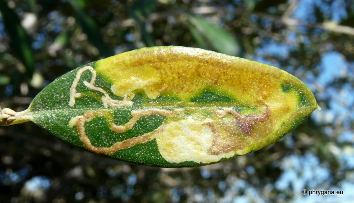
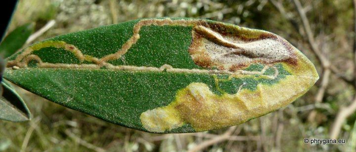

| PHRYGANA | Fauna | Flora | Galles | liste des espèces |
contact -
info - commentaires phrygana1 (at) gmail.com |
| Particularités crétoises | nouveautés | Mines | ressources naturelles |
| Metriochroa latifoliella (Millière1886) |
| 321 | Fauna | LEPIDOPTERA | GRACILLARIIDAE | Gracillariinae | Metriochroa Busck 1900 |
|
 Metriochroa latifoliella feuille minée de Olea europaea subsp. europaea Agios Giorgos (Melambes) 29 mars 2010 |
| (fr) la Petite mineuse des oliviers (en) Small olive leafminer |
| Envergure: 7 - 9 mm |
| La couleur de fond est gris clair tacheté d'écailles noires, avec des taches noires sur les franges; pattes annelées de brun foncé et de blanc |
| Oeuf petit, un peu aplati, elliptique, pondu sur la face inférieure de la feuille; éclosion après quelques jours; développement larvaire entre 30 et 45 jours |
| La chenille est oligophage: diverses Oleaceae dont Olea europaea subsp. europaea, Phillyrea sp. |
| Parties attaquées: les feuilles |
| Larve mineuse: La larve jaunâtre creuse une galerie-tunnel, d'abord en direction de l(apex de la feuille, puis fait un demi-tour; galerie très étroite au début, s'élargissant progressivement et considérablement. Le "frass" est très abondant et occupe le centre de la galerie.La nymphose a lieu dans le limbe, dans un cocon à la fin de la galerie. |
| Espèce plurivoltine: période de vol entre mars et octobre |
| Statut en Crète: indigène |
| Biotopes en Crète: vergers, jardins. |
| Distribution: Europe méditerranéenne (partout où il y a des cultures d'oliviers). |
| Note: les dégâts causés par Metriochroa latifoliella ne sont pas importants: en général la feuille jaunit après l'émergence et tombe. Il y a rarement une infestation |
| Larve oligophage: diverses Oleaceae dont: | ||
|
|
||
| Olea europaea subsp. europaea, | ||
|
 Metriochroa latifoliella feuille minée de Olea europaea subsp. europaea Agios Giorgos (Melambes) 29 mars 2010 |
| 10 août 2013 |
| © paul fontaine -- © Phrygana.eu 2007 -- 2013 |